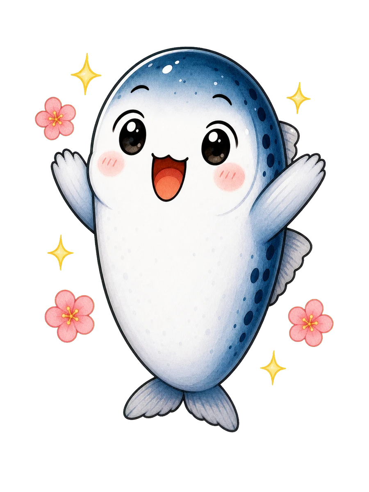

イワシん！氷見おさかなパズル🐚 0 / 3 スポット
HIMI SEA ADVENTURE
氷見をめぐって
おさかなを集めよう！
スポットを訪れてパズルに挑戦。魚カードを集めて、イワシんと氷見の海を冒険しよう！

海のパズルに挑戦！
スポットを選んでチェックインしよう
🐟 スコアアタック
スコア 0
連鎖 0最大消し 06個以上 0自己ベスト 0
イワシんと一緒に、魚をそろえてみよう！
となり合うピースを入れ替えてマッチを作ろう。連鎖でできた特殊コマは上から補充されるよ。マッチで消すと発動！
イワシんの豆知識：氷見では、マイワシ・カタクチイワシ・ウルメイワシが「氷見鰯」として親しまれているよ。
氷見のスポット
3つの場所をめぐって図鑑を完成させよう
おさかな図鑑の完成度0 / 3
おさかな図鑑
集めたカードはここに並ぶよ
試作版：現地QRコードの代わりに「ここでチェックイン」ボタンで進めます。
実際のスポット間の距離・移動方法は、公開前に確認して設定します。